London page · Harden pass (frontend-design) · 3 October 2026
The frontend-design pass found the page reads as "a breeder's ledger in steel and brass, not a template", strongest in the first screen and the dark FAQ ledgers, weakest in the long middle. It fixed five things without changing any words, links or images:
The ideas below would change how the page looks, so each waits for you.
What's wrong: the same invisible-link problem fixed on London is on the homepage (48 links) and the health page (29), and likely every page built on the shared style. A link you can only find by colour fails WCAG for colour-blind readers. The fix: the London underline style moved into the site's shared stylesheet, so every page gets it. No screenshot is needed: it looks exactly like London's links now.
What's wrong: sixteen identical seal dividers, each 154px tall, sit between every chapter, so the seal stops meaning "a new part". The idea: a thin steel hairline between chapters, and the seal kept only where the page turns into the FAQ blocks, the letters and the contact form.
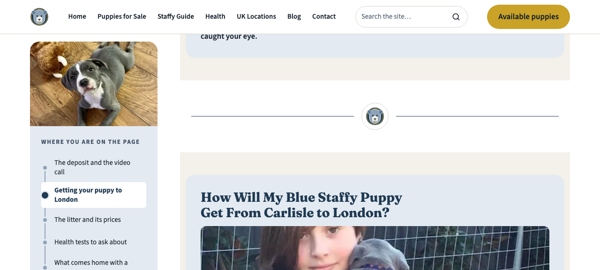
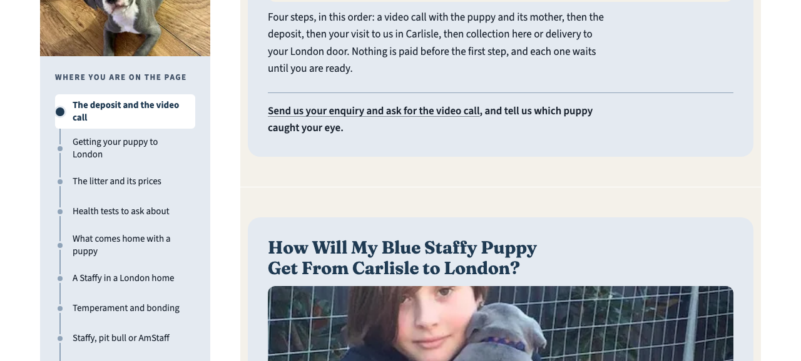
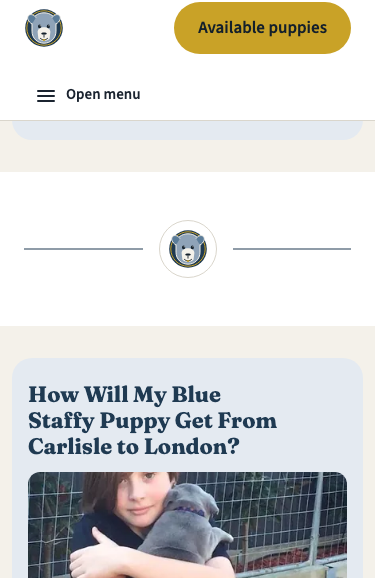
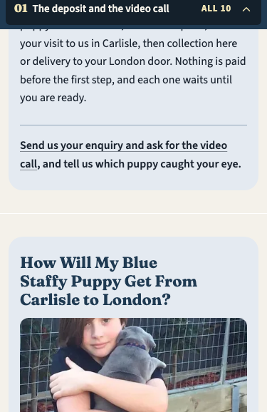
What's wrong: nothing on the page moves; the hero arrives fully formed. The idea: the six filmstrip photos fade and rise 8px into place once, 200ms each, one after another. Transform and opacity only, and switched off for anyone whose device asks for less motion. Frames below at 0, 150, 300 and 500ms.
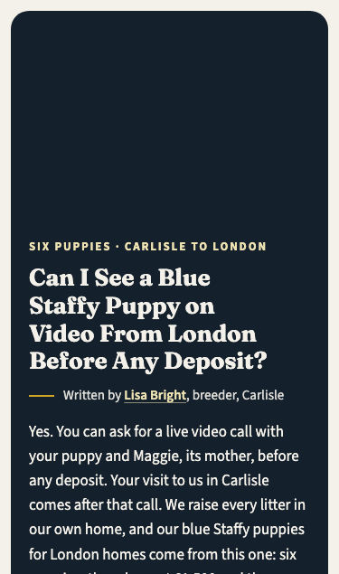
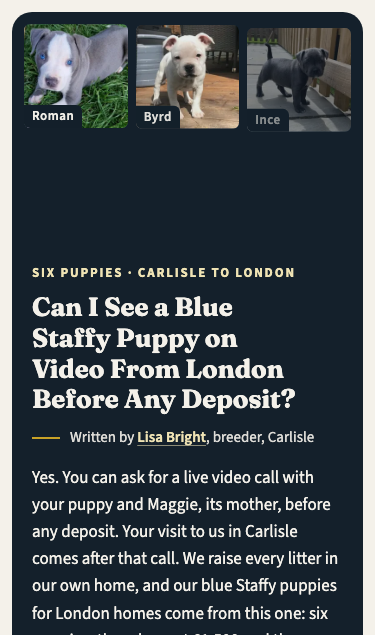
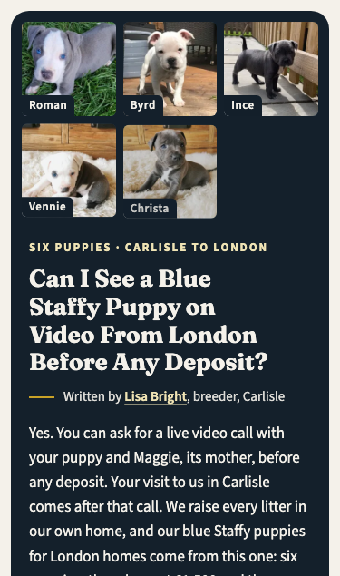
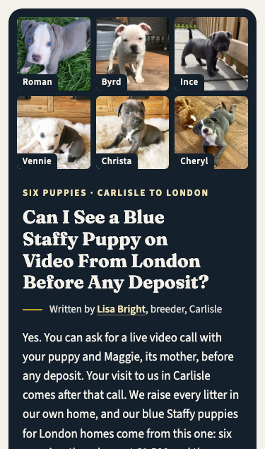
What's wrong: the chapter panel sits 12px in from its band, where every other panel sits 16px in on a phone and 32px on bigger screens, so on desktop it looks slipped inside a thin frame. The catch: applying it shrinks the text column, and one photo (the registration-check photo) then loads at more than twice its shown size. It needs a smaller copy of that photo added first, beside the original.
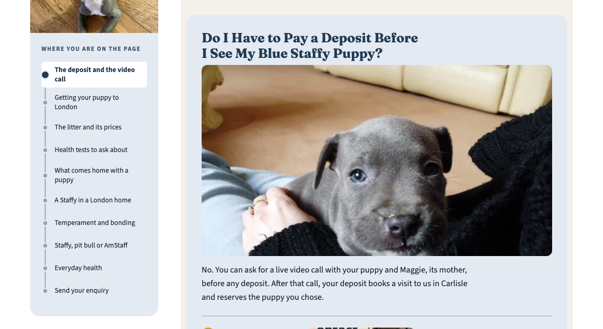
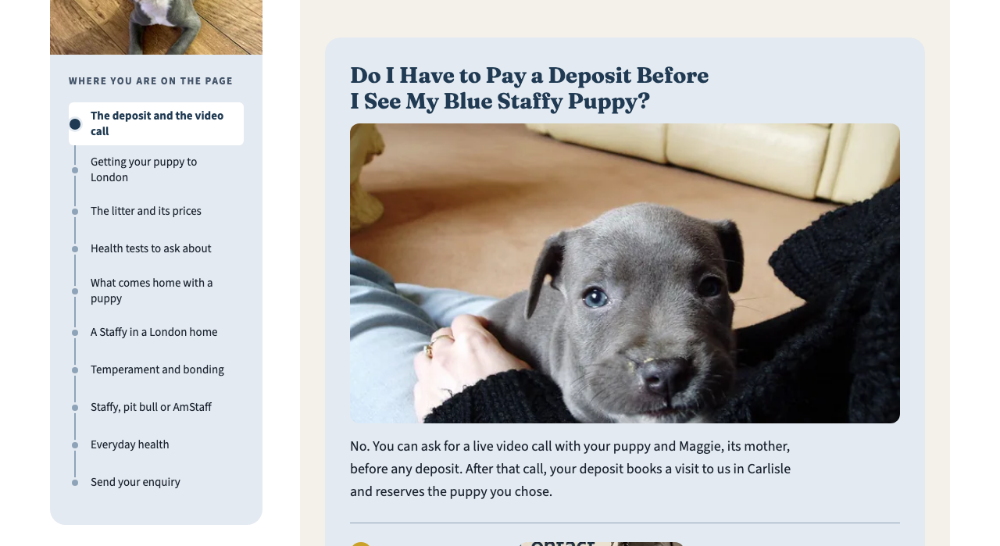
What's wrong: two images have words printed in them, and the crop cuts the words. The "Contact Us" graphic loses the top of its headline, and the Staffordshire / American Bully comparison loses "BULL TERRIER" and "BULLY". The fix: show the whole picture on the page's bone colour (no grey or black bars, per your image rule).
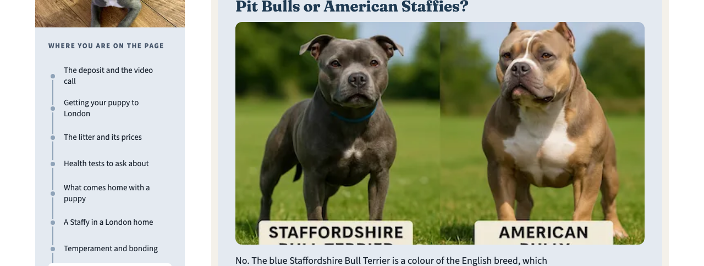
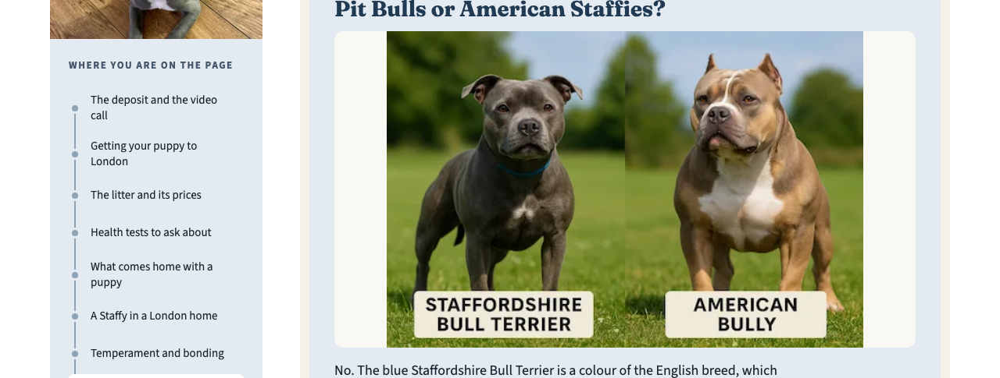
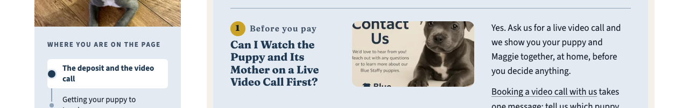
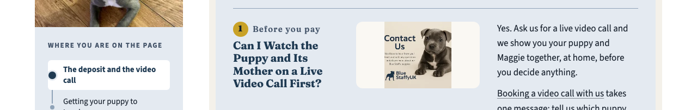
What's wrong: in the footer, "© 2026 Blue Staffy UK" sits 11–12px above "Privacy policy" on the same row, and the contact form's privacy link has no hover. The fix: centre the row and add the hover. It repaints the footer on every page and the form on four.
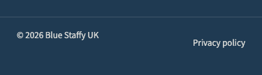